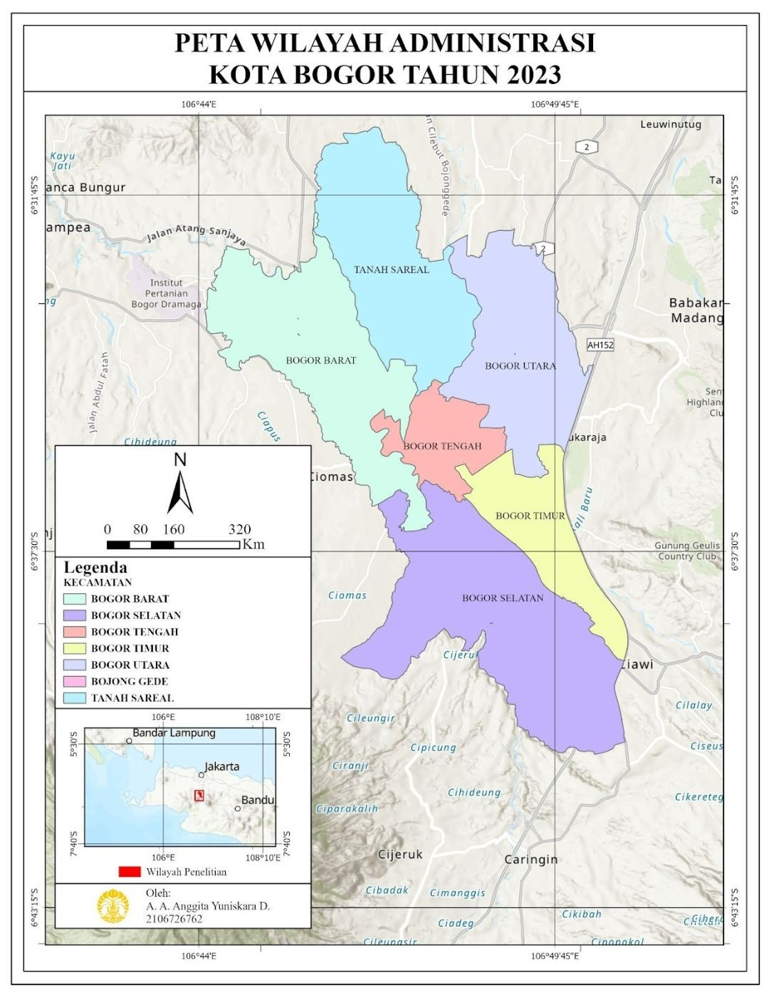
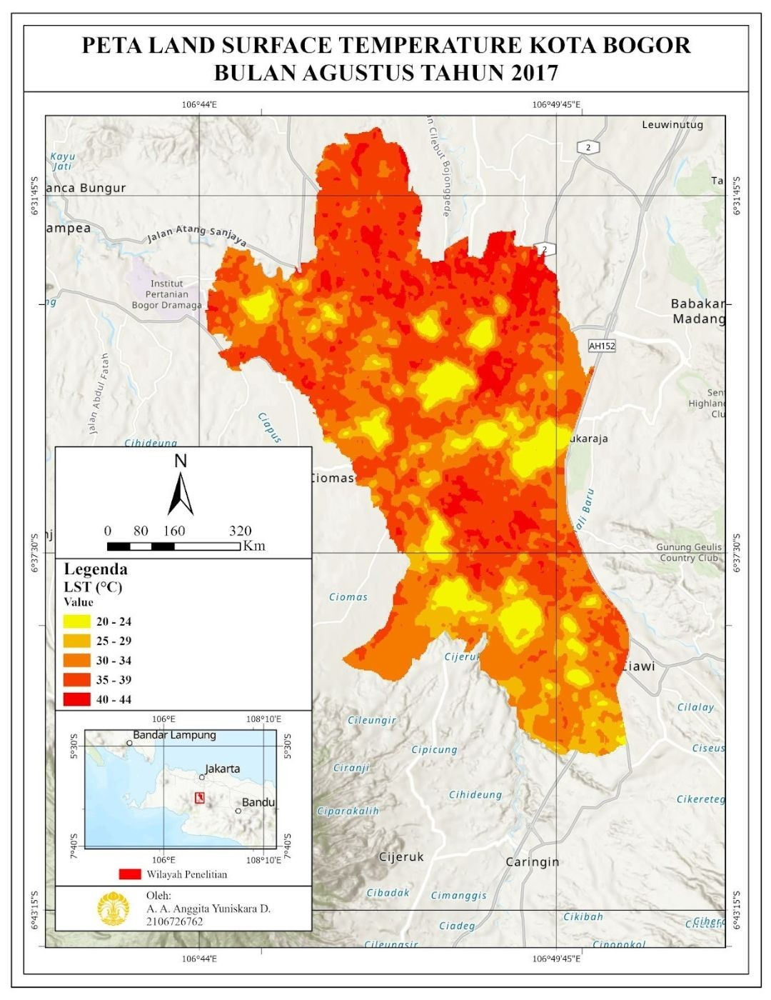
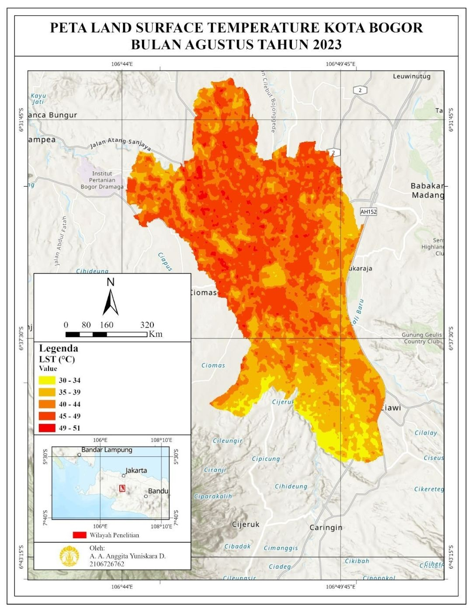
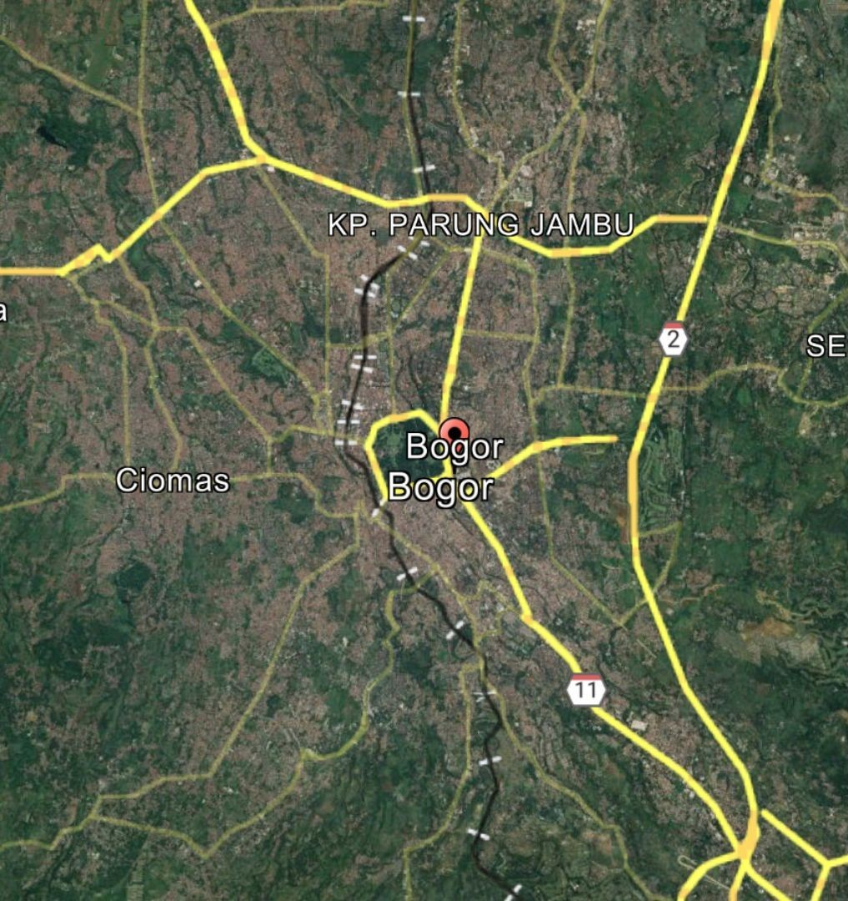

Pemanfaatan Land Surface Temperature untuk Melihat Dampak Perkembangan Permukiman di Kota Bogor
Latar belakang
Pertumbuhan penduduk selalu diikuti kebutuhan permukiman yang terus naik, sementara ruang di muka bumi terbatas. Akibatnya, wilayah perkotaan berkembang masif dan menggeser lahan yang semula berupa vegetasi, hutan, dan sawah menjadi permukiman, infrastruktur kota, dan industri. Pergeseran ini punya konsekuensi langsung pada suhu. Wilayah yang didominasi vegetasi cenderung lebih sejuk karena pepohonan menaungi permukaan dan mendinginkan udara lewat evapotranspirasi. Ketika vegetasi diganti beton dan aspal yang menyerap serta memancarkan panas lebih efisien, suhu wilayah meningkat signifikan. Fenomena ini dikenal sebagai Urban Heat Island (UHI), dan dampaknya tidak berhenti di suhu. Berkurangnya vegetasi berarti berkurangnya tanaman yang menyerap karbon dioksida dan polutan, sehingga kualitas udara kota cenderung lebih buruk daripada pedesaan.
Tekanan itu terasa jelas di Kota Bogor. Kota ini berada di Provinsi Jawa Barat sebagai enklave yang dikelilingi Kabupaten Bogor, pada koordinat 6°30'30" sampai 6°41'00" LS dan 106°43'30" sampai 106°51'00" BT. Bogor dikenal sebagai kota hujan karena curah hujannya tinggi, dan pada masa kolonial Belanda disebut Buitenzorg, yang berarti tanpa kecemasan. Luasnya hanya 111,39 km2 dengan enam kecamatan, sementara menurut BPS jumlah penduduknya naik dari 1.013.019 jiwa pada 2013 menjadi 1.070.719 jiwa pada 2023, atau bertambah sekitar 57.700 jiwa dalam sepuluh tahun di wilayah yang sangat sempit. Dengan pertambahan sebesar itu, tata guna lahan Bogor berubah signifikan. Lahan hijau yang dulu melimpah berubah menjadi permukiman, pusat perbelanjaan, dan fasilitas umum, sehingga ruang hijau berkurang dan suhu permukaan ikut naik.
Untuk melihat dampak perkembangan permukiman, dibutuhkan ukuran yang bisa dibandingkan antar waktu, dan Land Surface Temperature (LST) memenuhi kebutuhan itu. Data ini memungkinkan pemantauan jangka panjang atas seluruh wilayah sekaligus, sehingga suhu permukaan tahun-tahun sebelumnya bisa dibandingkan dengan tahun terbaru untuk melihat tren perubahannya dan mengidentifikasi daerah yang paling terkena efek pulau panas. Informasi ini berguna bagi pemerintah kota sebagai dasar strategi mitigasi, misalnya penambahan ruang hijau, taman kota, dan material bangunan yang lebih ramah lingkungan. Karena itu, penelitian ini memetakan LST Kota Bogor pada tahun 2017 dan 2023, lalu membaca perubahannya sebagai petunjuk dampak perkembangan permukiman.

Data yang digunakan
Seluruh data yang dipakai berupa data sekunder dan tidak diambil langsung di lapangan. Citra satelit dipilih karena menjangkau seluruh kota sekaligus. Landsat 8 dipakai karena memiliki saluran termal (band 10) dengan resolusi 30 m, cukup rinci untuk melihat variasi suhu antar bagian kota. Citra diakses lewat Google Earth Engine (GEE) dengan pemanggilan kode, sedangkan batas wilayah diambil dari Indonesia Geospatial Portal (Ina-Geoportal). Dua tahun dibandingkan, 2017 dan 2023, dengan jarak enam tahun agar perubahannya bisa terbaca.
| Data | Format Data | Jenis Data | Sumber |
|---|---|---|---|
| Citra Landsat 8 Collection 2 Level 2, pertengahan tahun 2017 dan 2023 (band ST_B10, SR_B5, dan SR_B4) | Raster | Sekunder | Google Earth Engine |
| Batas administrasi Kota Bogor | Shapefile | Sekunder | Ina-Geoportal |
| Jumlah penduduk Kota Bogor 2013 dan 2023 | Tabular | Sekunder | BPS Kota Bogor |
| Citra pembanding tahun 2023 | Citra satelit | Sekunder | Google Earth Pro |
Metode
Pengolahan berlangsung dalam dua tahap besar, yaitu menghitung LST di Google Earth Engine, lalu mengolah dan memvisualisasikannya di ArcGIS Pro. Tahap pertama dimulai dengan menyiapkan wilayah kajian. Shapefile batas Kota Bogor diunggah ke GEE sebagai asset dan diimpor ke dalam skrip sebagai batas area. Koleksi citra Landsat 8 Collection 2 Level 2 kemudian difilter berdasarkan lokasi dan rentang tanggal, digabung dengan median, dan dipotong sesuai batas kota. Dari citra itu diambil band termal (ST_B10), inframerah dekat (SR_B5), dan merah (SR_B4), yang masing-masing dikonversi dengan faktor skalanya.
LST tidak bisa dihitung hanya dari band termal, karena permukaan yang berbeda memancarkan radiasi termal dengan efisiensi berbeda (emisivitas). Karena itu NDVI dihitung lebih dulu, dan nilai minimum serta maksimumnya di wilayah kajian dipakai untuk menurunkan emisivitas permukaan. Emisivitas inilah yang mengoreksi suhu dari band termal. Setiap hasil ditampilkan sebagai layer di peta GEE untuk dicek, lalu diekspor ke Google Drive sebagai GeoTIFF beresolusi 30 m.
Tahap kedua dikerjakan di ArcGIS Pro. File GeoTIFF dari Google Drive dimasukkan lewat Add Data, lalu nilai suhu yang masih dalam Kelvin diubah menjadi Celsius dengan Raster Calculator (nilai raster dikurangi 273). Data yang bersifat kontinu kemudian dikelompokkan lewat Symbology dengan metode Natural Breaks (Jenks) dalam lima kelas dan skema warna kuning ke merah, supaya rentang suhu terbaca jelas. Terakhir, peta disusun sesuai kaidah kartografi, lengkap dengan judul, legenda, skala, arah utara, peta inset, dan sumber, sehingga siap diinterpretasi.
Hasil
Pada peta LST tahun 2017, suhu tinggi hampir mendominasi seluruh bagian atas hingga tengah kota. Suhu rendah masih muncul di beberapa titik, tetapi jauh lebih sedikit, dan nilai tertingginya mencapai 44 °C. Kondisi ini menandakan sebagian besar Bogor sudah didominasi lahan non-vegetasi, dengan kanopi yang berupa atap bangunan, jalan aspal, dan beton yang menyerap serta memancarkan panas lebih efisien daripada vegetasi. Area yang seharusnya bervegetasi telah beralih menjadi kawasan urban, sehingga tidak ada naungan maupun pendinginan lewat evapotranspirasi. Beton dan aspal juga punya kapasitas panas tinggi dan melepaskan panas yang terserap sepanjang hari ke udara, terutama malam hari, sehingga suhu tetap tinggi setelah matahari terbenam dan mengurangi kenyamanan termal penduduk.

Peta tahun 2023 menunjukkan pergeseran yang jelas, karena kisaran suhu pada legenda naik di kedua ujungnya. Pada 2017 kisarannya 20 sampai 44 °C, sedangkan pada 2023 menjadi 30 sampai 51 °C, artinya batas bawahnya naik 10 °C dan batas atasnya naik 7 °C. Perubahan sebesar itu dalam enam tahun menandakan transformasi vegetasi menjadi non-vegetasi di Bogor cukup masif. Bagian tengah kota, yang pada 2017 masih bersuhu relatif normal, ikut mengalami perubahan, sedangkan bagian utara sudah bersuhu tinggi sejak 2017. Itu mengindikasikan pembangunan masif dimulai dari utara lalu merambat ke tengah, kemungkinan karena Bogor utara menerima limpahan dari kota-kota di atasnya seperti Depok, Jakarta, dan Bekasi.

| Tahun | Kisaran LST pada legenda | Perubahan dibanding 2017 |
|---|---|---|
| 2017 | 20 – 44 °C | – |
| 2023 | 30 – 51 °C | Batas bawah +10 °C, batas atas +7 °C |
Di tengah pergeseran itu, bagian selatan tetap menjadi yang paling sejuk sejak 2017. Ada dua alasan yang masuk akal, yakni wilayah selatan berelevasi lebih tinggi, dan elevasi berkaitan erat dengan suhu yang lebih rendah, serta selatan berbatasan dengan Kabupaten Sukabumi yang perkembangan permukimannya tidak semasif kota-kota di utara. Pola utara-selatan ini kemudian diperiksa dengan citra Google Earth Pro tahun 2023. Bagian utara tampak dominan berwarna cokelat, yaitu kanopi atap bangunan, yang menunjukkan pembangunan memang lebih masif di sana, sedangkan bagian selatan masih lebih hijau karena lahan vegetasinya masih cukup banyak. Pengamatan ini sejalan dengan pola yang terlihat pada peta LST.

Hasil ini perlu dibaca dengan batasannya. Penelitian membandingkan citra satu periode pada dua tahun, sehingga yang tergambar adalah perubahan suhu permukaan pada waktu perekaman, bukan rata-rata tahunan. LST juga adalah suhu permukaan, bukan suhu udara, dan keterkaitannya dengan permukiman dibaca dari pola ruang serta pengecekan visual, belum dari penghitungan luas tutupan lahan. Karena itu, hasil ini paling tepat dibaca sebagai petunjuk arah dan lokasi perubahan.
Kesimpulan
LST Kota Bogor pada 2017 dan 2023 menunjukkan peningkatan suhu yang signifikan. Batas bawah kisaran suhu naik sekitar 10 °C dan batas atasnya sekitar 7 °C. Perubahan sebesar itu dalam enam tahun menandakan transformasi lahan vegetasi menjadi non-vegetasi terjadi secara masif. Penyebabnya adalah urbanisasi yang cepat, ketika lahan hijau digantikan beton, aspal, dan infrastruktur kota yang menyerap serta memancarkan lebih banyak panas daripada vegetasi. Efek Urban Heat Island menjadi makin jelas, dengan bagian utara sebagai kawasan terpanas dan bagian selatan yang berelevasi tinggi sebagai kawasan paling sejuk.
Dampaknya tidak terbatas pada iklim mikro. Naiknya LST berkaitan dengan beban energi pendinginan yang lebih besar, kualitas udara yang menurun, dan risiko gangguan kesehatan akibat panas. Untuk menekannya, diperlukan upaya yang lebih agresif mempertahankan dan menambah ruang hijau, memakai material bangunan yang ramah lingkungan, menerapkan teknologi hijau, dan menata kota secara berkelanjutan.
← View other projects